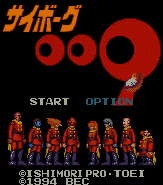

Cyborg 009 - SNES Games

Controls
- A button: Use Special Power
- B button: Jump
- X button: Use Special Power
- Y button: Shoot
- L button: Change Character
- R button: Change Character
- Start: Pause
- Select: [not used]
You get to choose three different characters before the start of each mission. During the
mission, you can switch between the three characters and use their unique skills to overcome obstacles.
Anime Video Game Resource Center © 1998 by Luis A. Cruz